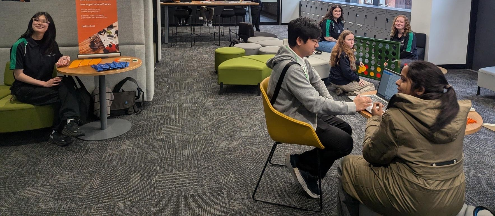
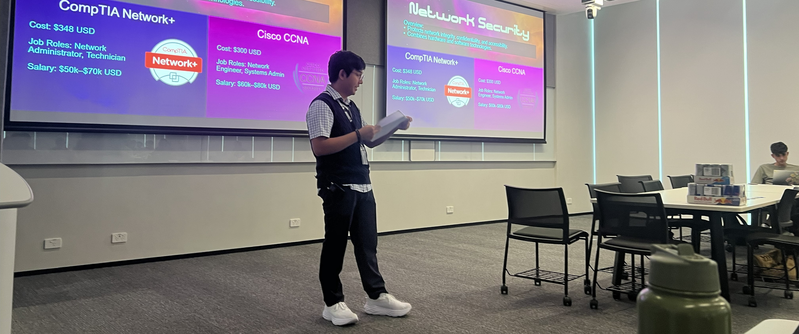
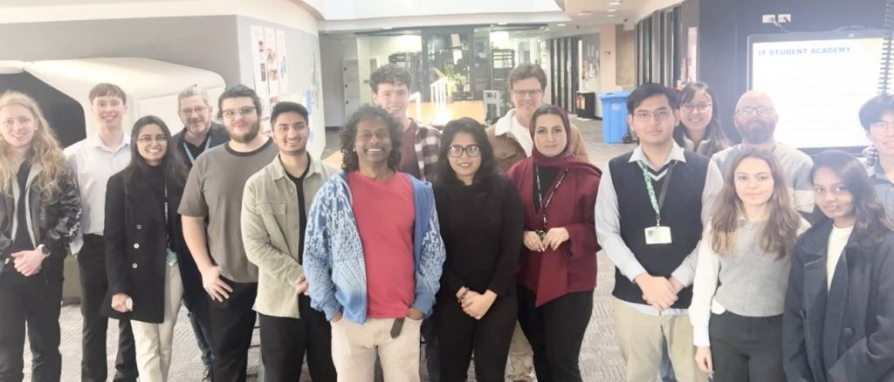

Click on the cards for more information on each!
Volunteering
With A Mission
I am the head student volunteer for a biweekly food drive, operated by With A Mission, at Deakin Residential Services. We distribute free meals and grocery items to student residents. As the head volunteer, I oversee the collection, storage, display, and distribution of donated items, ensuring smooth operations throughout each event. I also coordinate with the organizers and fellow volunteers to manage logistics, maintain food safety standards, and create an inclusive, supportive environment for all participants. Together, our team caters to approximately 80 to 120 students every two weeks, helping to reduce food insecurity and foster a stronger residential community.
Peer Mentoring
Maths & Writing Mentor
As a Maths and (later on) Writing Mentor, I provide academic support and guidance to other students concerning mathematics and academic writing concerns, respectively. Having conducted over 70+ one-on-one sessions, this role has strengthened my ability to explain and break down complex concepts clearly, tailor learning approaches to individual needs, and foster students' confidence and independence in their studies. Through ongoing mentoring, I have developed strong interpersonal and communication skills while contributing to the overall academic success of the student community.
Clubs & Societies
Deakin University Cybersecurity Association (DUCA)
As part of the DUCA committee, I played a key role in the coordination, setup, and logistics of on-campus events. I also primarily managed the club's support from RedBull Australia, overseeing the collection, storage, transfer, and distribution of complementary RedBull to our members during our events. This role strengthened my organizational and teamwork skills while ensuring that each event ran smoothly and maintained strong sponsor relationships.
As part of our events, I have been a speaker for two important Cybersecurity talks: one focused on Cybersecurity certifications and career pathways, and another discussing the 2024 Australian Cyber Bill and its implications for professionals and students. These experiences allowed me to share insights, engage with peers on emerging cybersecurity issues, and contribute to raising awareness within the student community.
Finally, I also led our club stalls during the Orientation Weeks of T1 and T2 2025, overseeing the secure storage and display of critical and expensive electrical IT equipment. I also introduced a Cybersecurity-themed trivia wheel and demo of live malware (contained within a VM) to drive engagement and foster curiosity among stall visitors. I also designed the club's current tablecloth.
Professional Memberships
Deakin IT Student Academy
2025
Memberships offered only to top-performing students within the School of IT. Invite-only. Please refer to here↗ for more information.
Australian Computer Society
2025